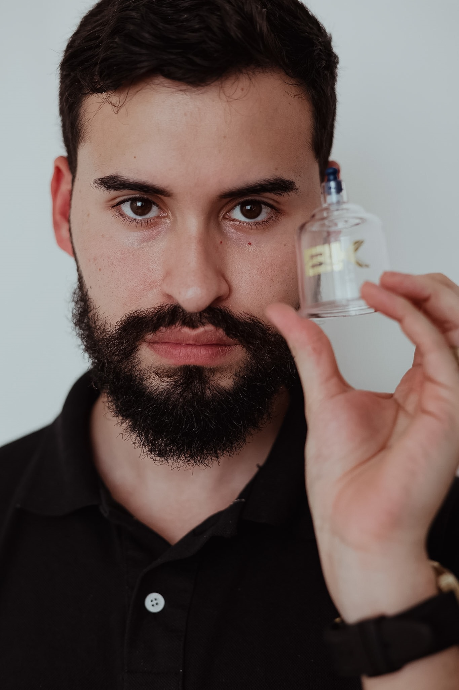

01 / TÉCNICA MANUAL
Liberação miofascial
Técnicas manuais direcionadas para trabalhar a mobilidade dos tecidos, aliviar a sensação de tensão e complementar sua rotina de movimento.
Tenho interesseMASSOTERAPIA • PERFORMANCE • RECOVERY
Técnicas manuais e cuidado personalizado para quem treina, corre, trabalha e quer se movimentar melhor.
SERVIÇOS
Escolha o atendimento ideal para seu momento. Cada sessão começa com uma conversa para entender suas necessidades e definir a abordagem mais adequada.
Técnicas manuais direcionadas para trabalhar a mobilidade dos tecidos, aliviar a sensação de tensão e complementar sua rotina de movimento.
Tenho interesseAplicação criteriosa de ventosas, conforme avaliação, sensibilidade e objetivos de cada pessoa.
Tenho interesseUma abordagem voltada às demandas de quem pratica atividade física, considerando treino, rotina e recuperação.
Tenho interesseUm momento para desacelerar, reduzir a percepção de tensão e cuidar do bem estar físico.
Tenho interesseCompressão sequencial como recurso complementar à rotina de recuperação, de acordo com a indicação e as condições individuais.
Conhecer o recoveryOs resultados variam conforme cada pessoa. Os atendimentos não substituem avaliação médica ou fisioterapêutica quando necessária.
SOBRE MIM
Sou profissional formado em Educação Física, especialista em liberação miofascial, ventosaterapia e recovery.
Meu trabalho é voltado ao cuidado muscular, à redução de desconfortos, à melhora da mobilidade e à recuperação após os esforços físicos. Cada atendimento é pensado de acordo com as necessidades e os objetivos de cada pessoa, respeitando os limites do corpo.
Meu propósito é ajudar você a se movimentar melhor, aliviar tensões e recuperar a confiança no próprio corpo.
Seu corpo merece um cuidado à altura.

ATENÇÃO A CADA DETALHE
O cuidado muscular pode fazer parte de uma rotina equilibrada de treino, descanso e bem estar.
Encontrar meu atendimentoGALERIA
Registros reais de atendimentos. Selecione uma imagem para visualizar em tamanho ampliado.
PARA QUEM É
Do treino intenso à rotina corrida, o atendimento começa entendendo o que você precisa hoje.
Cuidado complementar à rotina de corrida e às demandas musculares do treinamento.
Atenção às tensões e à recuperação dentro de uma rotina de força.
Uma abordagem individualizada que considera modalidade, carga e rotina.
Uma pausa para cuidar do corpo e do bem estar no dia a dia.
FEEDBACKS
Veja essas avaliações e muitas outras no Google
Ver avaliações no GoogleDÚVIDAS FREQUENTES
Se sua dúvida não estiver aqui, entre em contato para conversarmos antes da sessão.
Você pode explicar seu objetivo no contato inicial. Vamos conversar sobre sua rotina e suas necessidades para identificar a opção mais adequada. Quando houver sinais que exijam avaliação de outro profissional, isso será orientado.
Não. Há opções para atletas, praticantes de atividade física e pessoas que procuram relaxamento e cuidado muscular.
Podem surgir marcas temporárias na pele. A aplicação deve considerar sua saúde, sensibilidade e possíveis contraindicações, e você pode conversar sobre isso antes da sessão.
Não. A massoterapia é um cuidado complementar e não substitui diagnóstico, tratamento médico ou fisioterapêutico quando indicados.
Use o botão de agendamento abaixo para abrir uma conversa e informar o serviço de interesse e os horários que funcionam para você.
SEU PRÓXIMO PASSO
Entre em contato para tirar dúvidas e encontrar o atendimento mais adequado para você.